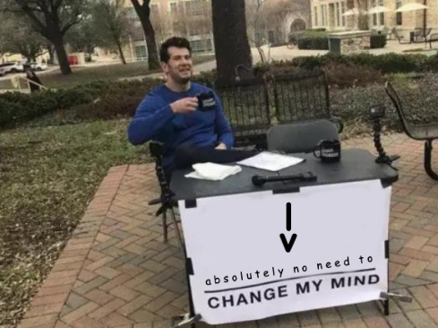

|
v
tl;dr
All <- vs = flamewars are nullified forever with the introduction of my new ‘down assign’ operator for the R language:
Note
Folks, nerdsniping works:
- Matthew Kay has now written the {explodeAssign} package, which lets you use special (weaponised) down-assign arrows in an interactive session
- Antoine Fabri has followed up with a coded implementation for making this possible with a just a
voperator (‘vassign’)
As Matthew says, this is a ‘terrible idea’ and you should use at your own risk, lol.
Get down
I no longer set my calendar by the movement of the Earth around the hottest point in the solar system. I now set it by the recurrent emergence of the hottest take in the solar system: that R’s assignment operator <- is garbage and R users should be ashamed of themselves.
Last time I spoke about this I made clear that our Strong Pointy Lad was the One True Operator for assignment. In that post, like some kind of modern Prometheus, I gave mortals the power to detect and destroy R scripts containing the weak and mundane equals assignment operator.
But with deference, I have come to realise something profound: we shouldn’t fight about this. It’s not worth anyone’s time to debate the relative merits of using <- or =. We should all relax. We can live in harmony.
…Because I’ve invented a new assignment concept. Folks, say hello to the down assign operator.
|
vYes, it’s still an ‘arrow’, but I think everyone will agree that it makes sense this time. Lateral assignment is unnatural and inefficient and is out of the natural order of things.
Now the the value falls effortlessly down your script, under the weight of gravity, into the name of the object. If it’s good enough Sir Isaac Newton, it’s good enough for me. Or don’t you believe in gravity? Exactly.
So x <- 1 (or, shudder, x = 1) translates to:
1
|
v
xElegant, isn’t it?
While R Core perform the trivial task of cementing this feature into base R, I’ve prepared a small function that will take care of rudimentary usage for now.
Note that this function won’t work in an interactive session; it takes the filepath to a script as its input. But that’s okay: I think <- haters are often computer-scientist types and 1337 h4x0rz who never sully their code by playing around in filthy IDEs and notebooks anyway. Obviously we should emulate them.
First I’ll write a demo script to a temporary file. It assigns the values of 1 and 2 to x and y, respectively, then adds them together.
demo_script <- "
1
|
v
x
2
|
v
y
x + y
"
demo_file <- tempfile(fileext = ".R")
writeLines(demo_script, demo_file)Now to define the function. It reads our script file, finds the down arrows, substitutes them, returns them back to the expression from whence they came, then executes the script.
point_down <- function(file) {
content <- readLines(file)
for (i in seq(content)) {
if (content[i] == "|" & content[i + 1] == "v") {
combos <- paste0(
content[i - 1], content[i], content[i + 1], content[i + 2]
)
rm_index <- c(i - 1, i, i + 1, i + 2)
content[rm_index[1]] <- combos
content[rm_index[2:4]] <- ""
content <- gsub("\\|v", "->", content)
}
}
path <- tempfile(fileext = ".R")
writeLines(content, path)
eval(parse(path))
}And now we execute.
point_down(demo_file)[1] 3Simply: wow.
Down and away
My next step for unifying the community around R operators is the ‘down pipe’:
_
vSome use the term ‘down pipe’ to mean the exterior drainage tube that takes wastewater away from their homes. I hope we can use the down pipe operator as a way of siphoning away all the bilge around the %>% vs |> arguments once and for all. You’re welcome.
Environment
Session info
Last rendered: 2023-07-17 18:14:10 BSTR version 4.3.1 (2023-06-16)
Platform: aarch64-apple-darwin20 (64-bit)
Running under: macOS Ventura 13.2.1
Matrix products: default
BLAS: /Library/Frameworks/R.framework/Versions/4.3-arm64/Resources/lib/libRblas.0.dylib
LAPACK: /Library/Frameworks/R.framework/Versions/4.3-arm64/Resources/lib/libRlapack.dylib; LAPACK version 3.11.0
locale:
[1] en_US.UTF-8/en_US.UTF-8/en_US.UTF-8/C/en_US.UTF-8/en_US.UTF-8
time zone: Europe/London
tzcode source: internal
attached base packages:
[1] stats graphics grDevices utils datasets methods base
loaded via a namespace (and not attached):
[1] htmlwidgets_1.6.2 compiler_4.3.1 fastmap_1.1.1 cli_3.6.1
[5] tools_4.3.1 htmltools_0.5.5 rstudioapi_0.15.0 yaml_2.3.7
[9] rmarkdown_2.23 knitr_1.43.1 jsonlite_1.8.7 xfun_0.39
[13] digest_0.6.31 rlang_1.1.1 fontawesome_0.5.1 evaluate_0.21 Reuse
CC BY-NC-SA 4.0